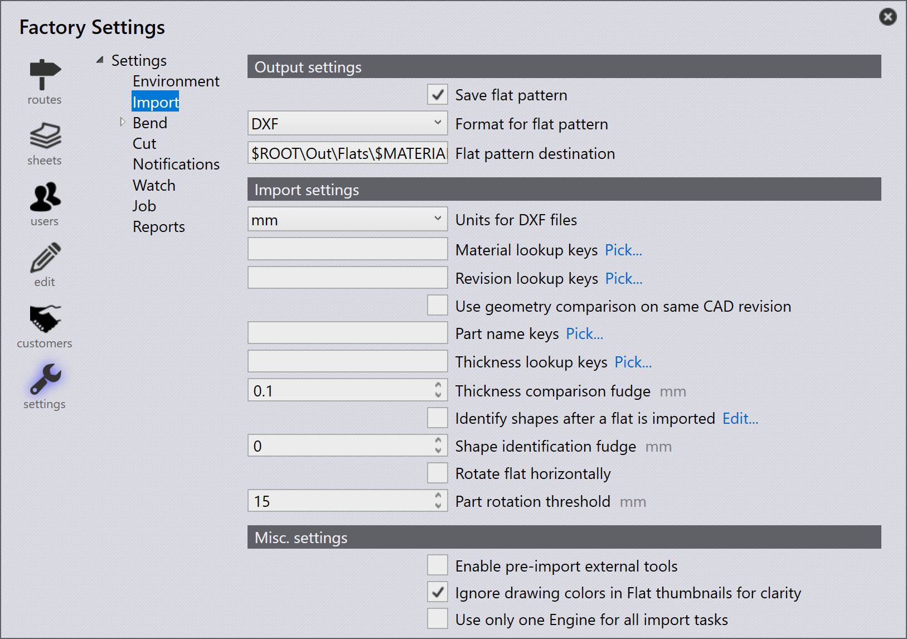
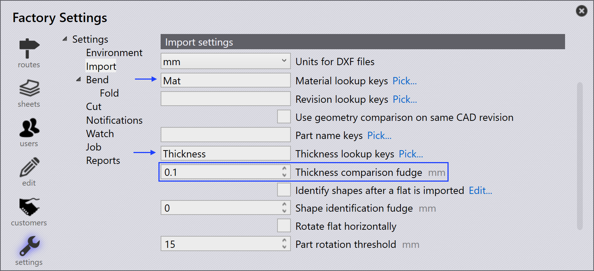
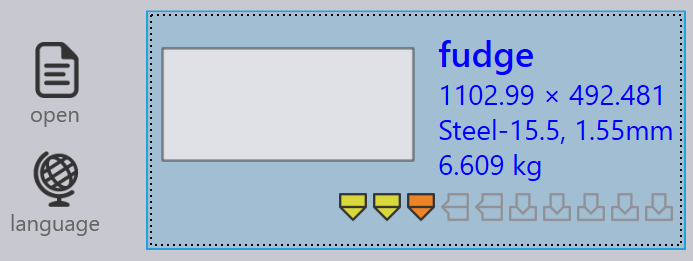

Importa

Output settings
Save flat pattern - Abilitare questa opzione per il salvataggio del pattern piatto di un pezzo importato.
Format for flat pattern - This option is used to choose either DXF or GEO file formats.
Flat pattern destination - Questa è la posizione in cui viene salvato il pattern piatto.
Import settings
Units for DXF files - This is the unit of measurement a DXF file will be imported with, the user can choose between mm or inch.
Material lookup keys - È possibile assegnare più voci di ricerca utilizzando una virgola separatrice tra di esse. Quando un pezzo viene importato, Praxis utilizza questi tasti per cercare i valori dei materiali. I valori cercati vengono quindi utilizzati per risolvere il materiale grezzo. I valori originali sono memorizzati nelle Proprietà varie del pezzo.
Revision lookup keys - Quando un pezzo viene importato, il valore di revisione dal file del pezzo grezzo (il file del pezzo importato) viene confrontato con il valore di revisione esistente nel magazzino. L’importazione viene annullata se la revisione è la stessa. La mappatura dei campi personalizzati è ora supportata anche per i file DXF. Per i file DXF, i dati dei campi personalizzati vengono estratti dal livello di testo nel disegno o da un allegato PPI.
Part name keys - Questa opzione funziona in modo simile ai tasti di ricerca del materiale e della revisione. Impostare una o più tasti Nome del pezzo per utilizzare il nome del pezzo PPI invece del nome del file come nome del pezzo.
Thickness lookup keys - È possibile assegnare più voci di ricerca utilizzando una virgola separatrice tra di esse. Quando un pezzo viene importato, Praxis utilizza questi tasti per cercare i valori di spessore. I valori cercati vengono quindi utilizzati per risolvere lo spessore. I valori originali sono memorizzati nelle Proprietà varie del pezzo.
Thickness comparison fudge - Questo viene utilizzato per cercare il materiale grezzo quando un pezzo viene importato. Praxis cerca di risolvere il materiale grezzo dopo aver analizzato il nome del materiale e lo spessore. Per ulteriori informazioni, fare riferimento all’argomento [Thickness fudge] qui di seguito.
Identify shapes after a flat is imported - Quando un pezzo viene importato, le forme interne del pezzo possono essere riconosciute e identificate automaticamente.
Shape identification fudge - Il valore dell’ultimo rilievo per l’identificazione della forma può essere impostato su:
-
Livello globale - Questo valore viene utilizzato come predefinito per tutte le forme.
-
Livello forma individuale - Il valore predefinito può essere sovrascritto impostando il valore dell’ultimo rilievo al livello forma individuale. Selezionando la forma nella finestra di dialogo Libreria forme viene visualizzato il valore dell’ultimo rilievo. Per impostazione predefinita, questo valore è impostato su 0 e per tali forme viene utilizzato il valore globale predefinito.
Rotate flat horizontally - Generalmente i tavoli delle macchine da taglio sono rettangolari e più larghi. Per migliorare la fattibilità dell’attrezzaggio, ruotare il pezzo lungo la larghezza del pezzo dopo l’importazione della parte.
Part rotation threshold - Impostarlo come numero minimo per consentire la rotazione. Qualsiasi pezzo più piccolo del valore impostato non viene ruotato.
Misc. settings
Enable pre-import external tools - Abilitare l’opzione di importazione degli strumenti di altro produttore pre-importanti per abilitare Creo Reader. Praxis carica le istanze di famiglia pre-estratte del pezzo lasciato cadere. Facciamo notare che l’estrazione dell’istanza viene eseguita durante il caricamento del pezzo (come operazione di pre-importazione), quindi il software Creo deve essere installato sul computer da cui viene caricato il pezzo.
Ignore drawing colors in Flat thumbnails for clarity - Abilitare questa opzione per generare miniature più nitide in scala di grigi. I colori dei layer e le entità di testo vengono ignorati per motivi di chiarezza dell’immagine.
Use only one Engine for all import tasks - Se abilitato, viene utilizzato un solo core Engine per attività importanti.
Ultimo rilievo spessore
Thickness comparison fudge sceglie il valore di spessore della lamiera più vicino quando uno spessore desiderato non è disponibile tra le giacenze, confrontando il valore di spessore delle lamiere nelle giacenze.
Ad esempio, supponiamo quanto segue:
-
Abbiamo un pezzo con spessore della lamiera di 1,6 mm in acciaio.

-
Il valore Thickness comparison fudge è 0,1 mm.

-
Tra le giacenze ci sono lamiere con spessore 1,5 mm, 1,55 mm e 1,7 mm.

JFY Plus sceglie una lamiera con il valore di spessore più vicino dopo aver confrontato il valore Thickness comparison fudge (0,1 mm) con l’elemento importato (misura 1,6 mm). In questo caso, verrà selezionato il valore 1,55 mm.
